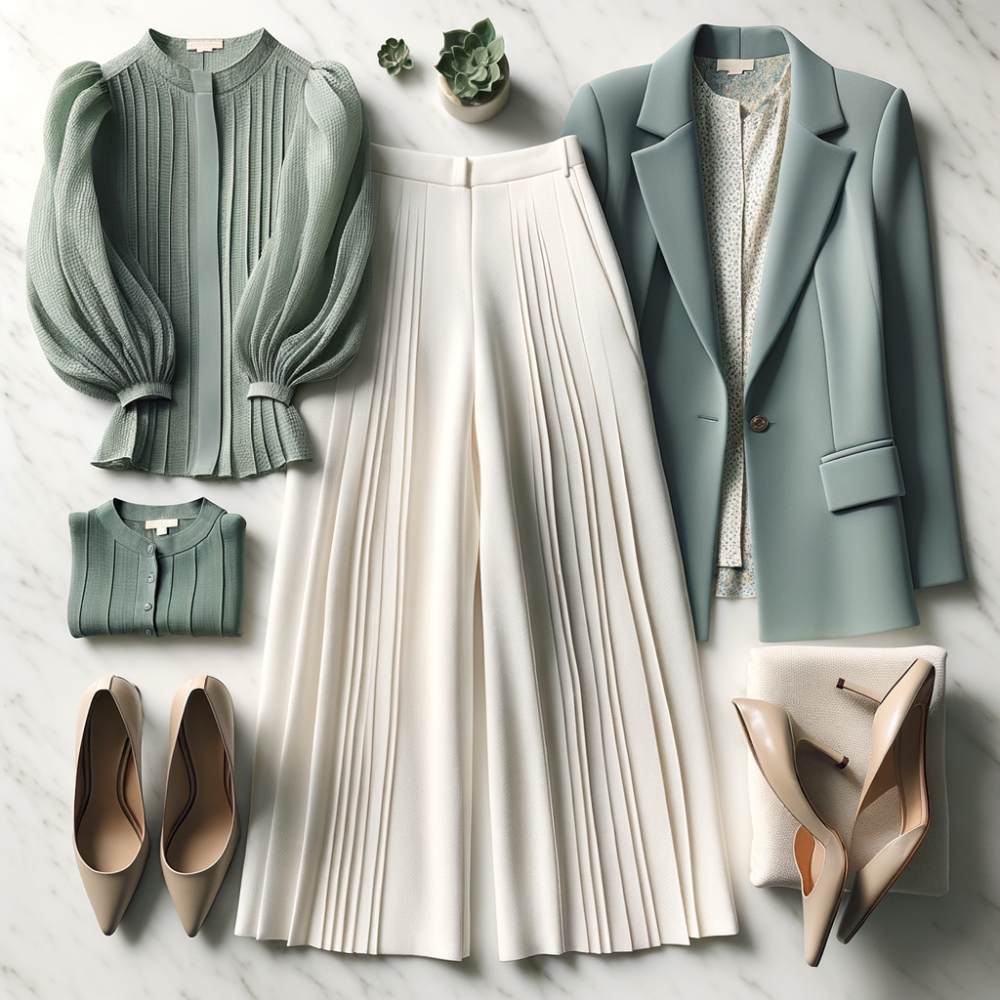

Loft
Seersucker Cinched Bubble Sleeve Top
$27.47 $54.95
Fitted top with seersucker texture throughout, bubble/puff sleeves with cinched cuff, elasticized V-neck. Rich deep teal/hunter green colorway. The seersucker adds dimensional texture that photographs beautifully and reads expensive in person. A wardrobe workhorse at a fraction of the price.
Shop This ItemWhy This Pick
This deep teal green is rich and distinctive — a far more interesting office top than navy or black. The seersucker texture adds visual interest that reads expensive. The cinched bubble sleeves are peak trendy without being costumey. At $27.47 this is practically free for what you're getting. Layer under your blazers or wear standalone with trousers — it does the work for you. The V-neck is flattering on your frame and the fitted silhouette makes it easy to tuck for a more polished look.
Style It With Your Wardrobe
Flat-lay outfit ideas pairing this piece with items you already own

Jewel-Toned and Commanding
Teal bubble sleeve top + Black wide-leg trousers (#106) + Maroon blazer (#202) + Black kitten heels (#517). Deep teal + maroon is a jewel-tone combination that is sophisticated and unexpected — the kind of color pairing that turns heads in a conference room. The black trousers and heels anchor the rich color story.